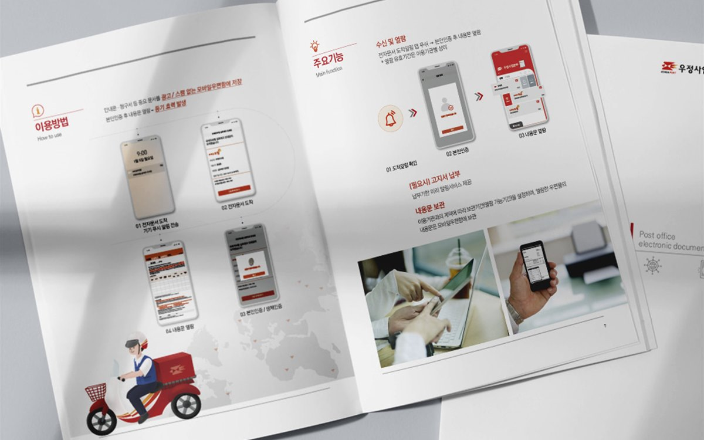
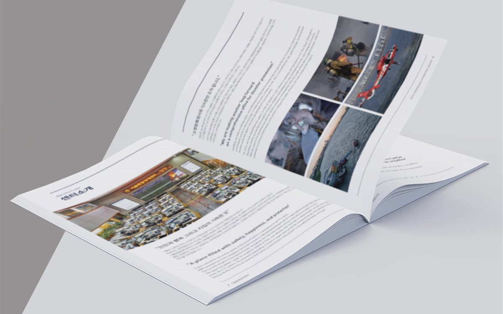

핵심 요약
① 정기 소식지는 첫 호에서 표지·꼭지별 템플릿과 원고 수합 양식을 만들어 두면 이후 호는 원고 접수 후 1주 안에 발행할 수 있습니다.
② 연간 백서·보고서는 발간등록번호, ISBN, 저작권 표기, 기관 CI 규정을 목차 단계에서 확인해야 결재 후 재작업이 없습니다.
③ 24페이지 이하 소식지는 중철 제본, 48페이지 이상 백서는 책등 표기가 가능한 무선 제본이 보관과 배포에 유리합니다.
안녕하세요, 퍼스트디자인 대전지사입니다. 정부대전청사와 세종청사, 그 산하 기관과 공공기관은 월간·분기 소식지와 연간 백서, 성과 보고서를 정기적으로 발간합니다. 담당자가 바뀌어도 발행 주기는 그대로라 매번 처음처럼 준비하면 일정이 늘 빠듯합니다. 오늘은 발행 주기별로 무엇을 미리 만들어 두면 매호 준비가 편해지는지 정리해 드리겠습니다.
월간·분기 소식지는 왜 템플릿이 먼저일까?
소식지는 호마다 내용이 바뀌지만 구조는 같습니다. 기관장 인사말, 주요 정책, 현장 소식, 직원 이야기, 일정 안내처럼 꼭지가 정해져 있습니다. 첫 호를 만들 때 이 꼭지별로 레이아웃 템플릿을 만들어 두면 이후 호는 원고와 사진만 바꿔 넣으면 됩니다. 저희는 첫 호에서 표지 3안, 본문 꼭지 템플릿, 사진 규격, 글자 수 기준까지 정리한 '발행 가이드'를 함께 드립니다.
원고 수합 양식도 같이 만듭니다. 부서에서 원고를 보낼 때 꼭지명, 글자 수, 사진 매수, 캡션을 정해진 양식에 채워 보내면 편집 단계에서 다시 묻는 일이 줄어듭니다. 이렇게 준비하면 원고 접수 후 1주 안에 발행하는 일정이 가능합니다.

연간 백서와 보고서는 무엇을 먼저 확인해야 할까?
백서와 연간 보고서는 소식지와 달리 발간물 규정을 따릅니다. 아래 항목은 목차를 잡는 단계에서 담당자와 함께 확인합니다.
| 항목 | 확인 내용 |
| 발간등록번호 · ISBN | 번호 발급 일정, 판권면 표기 위치와 형식 |
| 기관 CI · 정부 상징 규정 | 로고 여백 · 색상 · 병기 순서, 표지 사용 규칙 |
| 저작권 · 공공누리 표기 | 이용 허락 유형, 사진 · 도표 출처 표기 |
| 전자책 · 웹 게시 | PDF 접근성(글자 추출 · 대체 텍스트), 파일 용량 기준 |
특히 웹에 게시하는 PDF는 글자가 이미지가 아닌 텍스트로 추출되어야 하고, 도표에는 대체 텍스트가 필요합니다. 인쇄용 파일과 웹 게시용 파일을 처음부터 따로 만들어 드립니다.
제본 방식은 페이지 수로 정하면 될까?
기본 기준은 페이지 수입니다. 8~24페이지 소식지는 중철 제본이 펼침성이 좋고 단가가 낮습니다. 32페이지를 넘기면 중철은 가운데 페이지가 튀어나오기 시작하고, 48페이지 이상 백서는 무선 제본으로 책등에 제목을 넣어야 서가에서 찾기 쉽습니다. 100페이지가 넘는 보고서나 보관용 백서는 양장 제본도 가능합니다.
중철 제본은 4의 배수, 무선 제본은 2의 배수로 페이지를 맞춰야 하므로 원고량이 애매하면 저희가 가장 가까운 구성을 제안합니다. 자체 인쇄소에서 두 방식의 실물 샘플을 보여드려 결재 라인에서 손에 쥐고 판단하실 수 있게 합니다.
연간 발행 일정은 어떻게 잡아야 할까?
월간 소식지는 원고 마감 → 편집 1주 → 교정 3일 → 인쇄 3일로 매달 같은 날짜에 발행하는 고정 일정을 잡습니다. 연간 백서는 원고 수합 2주, 디자인 3주, 심의·결재 2주, 인쇄·제본 1주로 두 달을 잡되, 연말에 몰리는 것을 피해 원고 수합을 10월에 시작하는 편이 안전합니다.
연간 발행 계약으로 진행하면 호별 편집 단가와 인쇄 단가를 함께 조정할 수 있고, 담당자가 바뀌어도 발행 가이드와 템플릿이 남아 있어 인수인계가 쉬워집니다.
자주 묻는 질문
Q. 세종청사 산하기관인데 소식지를 격월로 냅니다. 매호 디자인비가 부담됩니다.
A. 첫 호에서 템플릿을 만들어 두면 이후 호는 편집 위주라 비용이 내려갑니다. 연간 6회 발행 기준으로 호별 단가를 정리해 드립니다.
Q. 백서에 발간등록번호를 넣어야 하는데 절차를 잘 모릅니다.
A. 발급 절차는 기관 담당 부서를 통해 진행하시고, 저희는 발급 일정에 맞춰 판권면을 비워 두었다가 번호가 나오면 넣어 인쇄합니다. 표기 형식은 기관 규정에 맞춰 정리해 드립니다.
Q. 인쇄본과 함께 웹 게시용 파일도 받을 수 있나요?
A. 네. 인쇄용 PDF, 웹 게시용 저용량 PDF, 카드뉴스용 이미지, 원본 파일을 한 세트로 드립니다.
Q. 정부대전청사로 방문 상담이 가능한가요?
A. 네. 기존 발간물과 용지·제본 샘플을 가지고 방문합니다. 출입이 제한되는 청사는 화상 회의와 샘플 우편 발송으로 대신합니다.
퍼스트디자인 대전지사
대덕연구단지와 정부대전청사, 세종·청주·공주 충청권의 연구기관·바이오 기업·공공기관·제조기업 홍보물을 전담합니다. 기획·디자인·번역·촬영·인쇄를 한 팀에서 처리하고, 자체 인쇄소에서 소량 디지털 인쇄부터 대량 옵셋 인쇄까지 직접 진행합니다. 초안을 먼저 확인받고 진행하는 방식으로 12년간 3,200건 이상을 납품했습니다.
- 12년+편집 디자인 경력
- 3,200+납품 프로젝트
- 98%재의뢰 · 소개
- 400+정부지원사업 수행
정부대전청사·세종청사 및 산하 공공기관의 소식지, 백서, 연간 보고서 제작이 필요하시면 발행 주기와 페이지 수를 알려주세요. 템플릿 설계부터 인쇄·납품까지 한 팀이 진행합니다. 상담은 1600-9487(평일 09:00~18:00) 또는 work@firstmkt.co.kr로 문의해 주세요. 대전·세종·충청권은 직접 방문 미팅도 가능합니다.